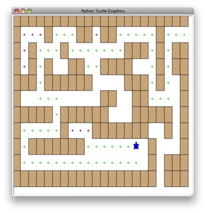

import turtle
PART_OF_PATH = 'O'
TRIED = '.'
OBSTACLE = '+'
DEAD_END = '-'
class Maze:
def __init__(self,mazeFileName):
rowsInMaze = 0
columnsInMaze = 0
self.mazelist = []
mazeFile = open(mazeFileName,'r')
rowsInMaze = 0
for line in mazeFile:
rowList = []
col = 0
for ch in line[:-1]:
rowList.append(ch)
if ch == 'S':
self.startRow = rowsInMaze
self.startCol = col
col = col + 1
rowsInMaze = rowsInMaze + 1
self.mazelist.append(rowList)
columnsInMaze = len(rowList)
self.rowsInMaze = rowsInMaze
self.columnsInMaze = columnsInMaze
self.xTranslate = -columnsInMaze/2
self.yTranslate = rowsInMaze/2
self.t = turtle.Turtle()
self.t.shape('turtle')
self.wn = turtle.Screen()
self.wn.setworldcoordinates(-(columnsInMaze-1)/2-.5,-(rowsInMaze-1)/2-.5,(columnsInMaze-1)/2+.5,(rowsInMaze-1)/2+.5)
def drawMaze(self):
self.t.speed(10)
self.wn.tracer(0)
for y in range(self.rowsInMaze):
for x in range(self.columnsInMaze):
if self.mazelist[y][x] == OBSTACLE:
self.drawCenteredBox(x+self.xTranslate,-y+self.yTranslate,'orange')
self.t.color('black')
self.t.fillcolor('blue')
self.wn.update()
self.wn.tracer(1)
def drawCenteredBox(self,x,y,color):
self.t.up()
self.t.goto(x-.5,y-.5)
self.t.color(color)
self.t.fillcolor(color)
self.t.setheading(90)
self.t.down()
self.t.begin_fill()
for i in range(4):
self.t.forward(1)
self.t.right(90)
self.t.end_fill()
def moveTurtle(self,x,y):
self.t.up()
self.t.setheading(self.t.towards(x+self.xTranslate,-y+self.yTranslate))
self.t.goto(x+self.xTranslate,-y+self.yTranslate)
def dropBreadcrumb(self,color):
self.t.dot(10,color)
def updatePosition(self,row,col,val=None):
if val:
self.mazelist[row][col] = val
self.moveTurtle(col,row)
if val == PART_OF_PATH:
color = 'green'
elif val == OBSTACLE:
color = 'red'
elif val == TRIED:
color = 'black'
elif val == DEAD_END:
color = 'red'
else:
color = None
if color:
self.dropBreadcrumb(color)
def isExit(self,row,col):
return (row == 0 or
row == self.rowsInMaze-1 or
col == 0 or
col == self.columnsInMaze-1 )
def __getitem__(self,idx):
return self.mazelist[idx]
def searchFrom(maze, startRow, startColumn):
# try each of four directions from this point until we find a way out.
# base Case return values:
# 1. We have run into an obstacle, return false
maze.updatePosition(startRow, startColumn)
if maze[startRow][startColumn] == OBSTACLE :
return False
# 2. We have found a square that has already been explored
if maze[startRow][startColumn] == TRIED or maze[startRow][startColumn] == DEAD_END:
return False
# 3. We have found an outside edge not occupied by an obstacle
if maze.isExit(startRow,startColumn):
maze.updatePosition(startRow, startColumn, PART_OF_PATH)
return True
maze.updatePosition(startRow, startColumn, TRIED)
# Otherwise, use logical short circuiting to try each direction
# in turn (if needed)
found = searchFrom(maze, startRow-1, startColumn) or \
searchFrom(maze, startRow+1, startColumn) or \
searchFrom(maze, startRow, startColumn-1) or \
searchFrom(maze, startRow, startColumn+1)
if found:
maze.updatePosition(startRow, startColumn, PART_OF_PATH)
else:
maze.updatePosition(startRow, startColumn, DEAD_END)
return found
myMaze = Maze('maze2.txt')
myMaze.drawMaze()
myMaze.updatePosition(myMaze.startRow,myMaze.startCol)
searchFrom(myMaze, myMaze.startRow, myMaze.startCol)